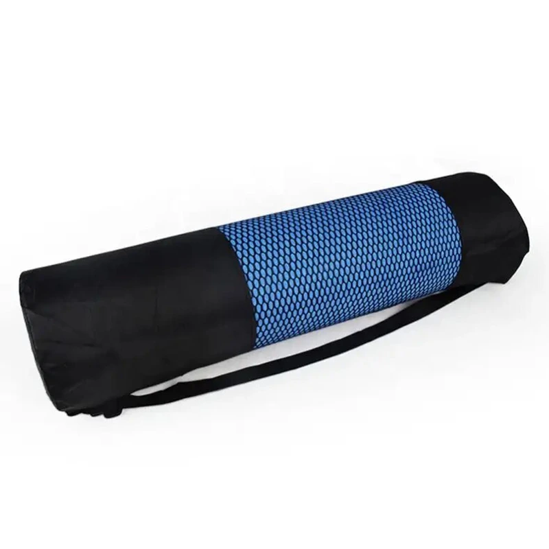

Tappetino da yoga e borsa da palestra, realizzati su misura. Il tessuto, le dimensioni e il marchio sono personalizzabili in base alle tue indicazioni.
| Spessore | personalizzabile |
|---|---|
| Quantità minima ordinabile | 500 pezzi |
| Conformità | Stabilimento certificato ISO 9001:2015 · Audit amfori BSCI (2025, rinnovo in corso) |
Borse da trasporto per tappetini, blocchi e piccoli accessori, in cotone, tela o tessuto Oxford. Le dimensioni, il colore e la tecnica di stampa del logo vengono stabiliti in base all’ordine.
Supporto completo OEM/ODM: materiale, dimensioni, spessore, colore, bicolore, stampa del logo, goffratura e confezionamento. Campioni fisici pronti in 7 giorni in base alle vostre specifiche.
Per studi, linee di vendita al dettaglio e programmi di kit di marca.
Richiedi oggi stesso un preventivo personalizzato e dei campioni gratuiti.
Contatta il nostro team